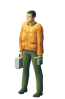

原野中的记录者
从翻领外套，回到工作雨衣。
这一轮修衣装结构、眼眶、短发和鞋型。保留同一套人体与骨架，在原相机下比较；美术仍在制作中。
实际尺寸 · 看完整人物
同为 128 × 196 画布，人物可见身高约 174px。两版使用同一相机、光向与持物姿态。


同一视角 · 整数倍检查
左为上一版，右为本轮。桌面 3 倍，小屏 2 倍；均无抖色。
换个观察角度，核对前襟与脸部。
仍是同一个站姿，只移动相机。用于确认闭合前襟、眼眶、眉毛和器物左右关系；这张不是新增转向动作。
- 衣装
- 移除翻领，缩短躯干部衣摆；闭合前襟、拉链与低立领使用同一套骨架。
- 脸部
- 使用拟合眼眶的源眼球，眉毛沿面部曲面；胡茬收回下颌，头部比例未独立缩放。
- 短靴
- 更换封闭短靴，应用源资产的身体遮挡和蒙皮；整个人物按鞋底接地。

还需要处理的部分
与原画相比，人物面貌、握持与绘画式织物色块仍有距离。局部材质还显得平整，当前不作为最终角色，也没有扩展步态或替换首页。